Наука · журнал «ДентАрт» 2017 №4
Оптико-морфологічні особливості електропровідних зон дентину
OPTOMORPHOLOGICAL FEATURES OF ELECTRICALLY CONDUCTIVE ZONES IN DENTIN
Вступ
Відомо, що структура дентину визначає характер поширення електричного струму, використовуваного при електроодонтометрії. При стандартному виконанні електроодонтометрії активний електрод зазвичай розташовують на так званих «чутливих точках»: вершині горба або ріжучому краї. Особливістю електроодонтометрії за наявності каріозної порожнини, яка перериває хід дентинних трубочок між порожниною зуба і емаллю на ділянці «чутливої точки», є розташування активного електрода на дні каріозної порожнини. Ця особливість прямо вказує на поширення електричного струму по дентинних трубочках, що явно корелює з поширенням світла у дентині і вказує на наявність анізотропії пропускання електричного струму дентином.
Електричний ланцюг, що складається з емалі та дентину, можна уявити як два провідники, з'єднані послідовно. Сила струму в такому ланцюжку залежить від питомої електропровідності емалі та дентину і від товщини їх шарів. При стандартному виконанні електроодонтометрії з «чутливих точок» активний електрод розташовують на тих місцях поверхні емалі, які найбільше віддалені від порожнини зуба і, відповідно, від рецепторного апарату пульпи. З цього випливає висновок про те, що в напрямку «вершина горба (ріжучий край) – ріг пульпи» питома електропровідність твердих тканин більша у порівнянні з такою на інших напрямках у системі «емаль – дентин», що має бути обумовлено як морфологічними, так і оптичними особливостями цих зон.
Мета статті – показати зв'язок питомої електропровідності інтактного дентину з його оптико-морфологічними характеристиками.
Матеріали та методи
Дослідження провадилося на молярах верхньої і нижньої щелепи, різцях, іклах і премолярах верхньої щелепи. Із фіксованих у формаліні зубів готувалися плоскопаралельні поперечні шліфи товщиною 1,0 мм (1 група) і товщиною 0,35-0,45 мм (2 група). Шліфи містили в собі дентин, розташований між порожниною зуба і жувальною поверхнею або ріжучим краєм. Площини шліфів різців та іклів були перпендикулярні поздовжній осі зуба. Площини шліфів молярів і премолярів були паралельні вершинам рогів порожнини зуба і, таким чином, могли трохи відхилятися від перпендикулярного розташування щодо поздовжньої осі зуба. Найбільше відхилення могло мати місце у премолярів (рис. 1).
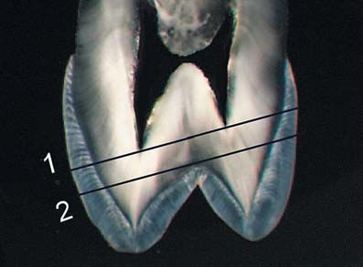
Шліфи 1-ї групи відмивали від формаліну в дистильованій воді протягом 30-40 хвилин за допомогою ультразвукової установки УЗУМІ-05. Відмиті шліфи опускали в розчин лідази і протягом п'яти хвилин обробляли ультразвуком, після чого в цьому ж розчині поміщали в термостат при температурі 36-37°C на добу. Після обробки лідазою шліфи промивали в 1% розчині детергенту (Triton WR 1339) і в дистильованій воді за допомогою ультразвуку для видалення продуктів гідролізу і дентинних ошурків з дентинних трубочок. Оброблені описаним вище способом шліфи просочували за допомогою ультразвуку 0,9% розчином хлориду натрію.
Кожен шліф клали у скляну кювету, заповнену фізіологічним розчином, і фотографували у прохідному світлі. Робили фотографування шліфів молярів, премолярів та іклів при їх контакті з тест-об'єктом поверхнею, повернутою до горбів. При цьому використовувалося природне світло і поляризоване світло при положенні кювети між поляризаторами.
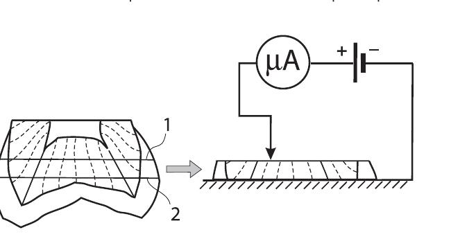
Після фотографування оцінювали електричну провідність шліфа (рис. 2). Вийнятий з фізіологічного розчину шліф усією поверхнею 2 приводили в контакт з мідною пластиною, яка виконувала роль негативного електрода. Точковий позитивний електрод діаметром 0,5 мм приводили в контакт з поверхнею 1. За допомогою мікроамперметра оцінювали силу струму в перші 1-2 секунди після замикання ланцюга постійного струму. Джерелом живлення була акумуляторна батарея з номінальною напругою 8,4 В. Перед проведенням вимірювання з поверхні 1 видаляли фільтрувальним папером вологу.
Результати
На фото 1 видно ефект зменшення зображення тест-об'єкта (світлонепроникна смуга) дентином другого моляра нижньої щелепи при проходженні природного світла з боку тест-об'єкта. На фото 2, крім зменшення зображення, видно спотворення форми: ефект зменшення зображення тест-об'єкта при його проекції на передні горби найбільше виражений між проекціями горбів, а все зображення вигнуте до ділянки, що відповідає центральній ямці.

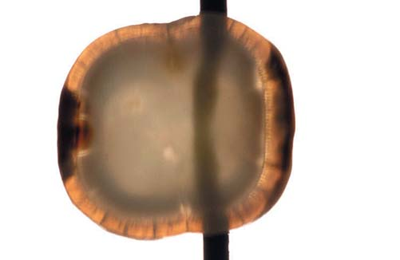
Фото 1. Ефект зменшення зображення тест-об'єкта дентином шліфа нижнього другого моляра при проекції тест-об'єкта на поперечну фісуру жувальної поверхні. Товщина шліфа 1 мм. Фото 2. Ефект зменшення зображення тест-об'єкта і спотворення його форми дентином того ж шліфа при проекції тест-об'єкта на передні горби. Вестибулярна поверхня повернута вгору.
На фото 3 той же шліф моляра на тест-об'єкті у поляризованому світлі при схрещених поляризаторах. У проекціях чотирьох горбів видно фігури у вигляді хрестів. При паралельних поляризаторах видність (контрастність) хрестів зменшувалася, а кольори змінювалися на додаткові: темні зони хрестів ставали світлими, а світлі – темними (фото 4).
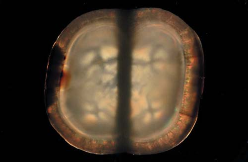

Фото 3. Той самий шліф моляра на тест-об'єкті у поляризованому світлі при схрещених поляризаторах. Фото 4. Той самий шліф моляра на тест-об'єкті у поляризованому світлі при паралельних поляризаторах.
На фото 5 бачимо ефект зменшення зображення тест-об'єкта і спотворення його форми дентином шліфа верхнього першого премоляра при проекції тест-об'єкта на щічний і піднебінний горби. Ефект зменшення зображення тест-об'єкта також найбільше виражений між проекціями горбів, але при цьому майже немає зміщення. У поляризованому світлі при частково схрещених поляризаторах у проекціях горбів також видно фігури у вигляді хрестів (фото 6).
Зменшення зображення тест-об'єкта дентином ікла бачимо на фото 7 і 8. При цьому ступінь зміни розмірів зображення залежав від взаємного розташування шліфа і тест-об'єкта, що практично не спостерігалося у випадках зі шліфами молярів і премолярів. У поляризованому світлі при незмінному розташуванні поляризаторів фігура змінювала форму при повороті шліфа навколо оптичної осі фотоапарата: фігура, схожа на мальтійський хрест (фото 9), ставала схожою на лемніскату Бернуллі (фото 10).


Фото 5. Ефект зменшення зображення тест-об'єкта і спотворення його форми дентином шліфа верхнього першого премоляра при проекції тест-об'єкта на щічний і піднебінний горби. Товщина шліфа 1 мм. Фото 6. Той же шліф премоляра поруч з тест-об'єктом у поляризованому світлі при частково схрещених поляризаторах.
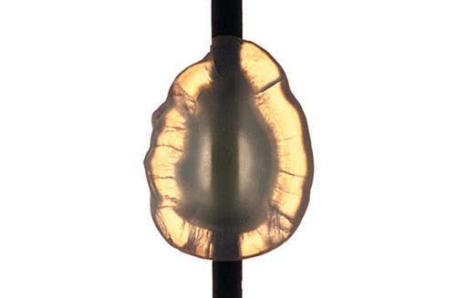
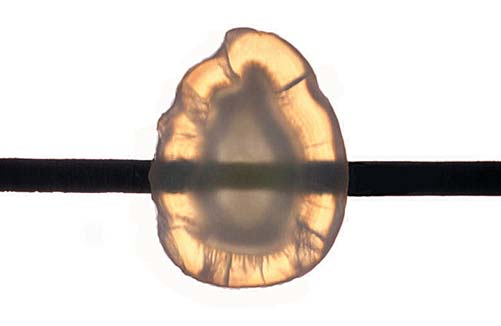
Фото 7. Ефект зменшення зображення тест-об'єкта дентином шліфа верхнього ікла при падінні світла і проекції тест-об'єкта на рвучий горб. Вестибулярна поверхня повернута праворуч. Товщина шліфа 1 мм. Фото 8. Більш виражений ефект зменшення зображення тест-об'єкта дентином того самого шліфа при тій же проекції, при повороті тест-об'єкта на 90°.
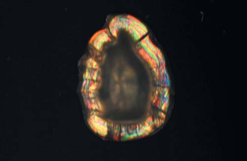
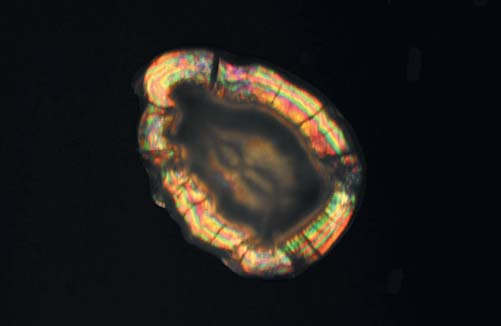
Фото 9. Той же шліф ікла у поляризованому світлі при схрещених поляризаторах. Фото 10. Той же шліф ікла у поляризованому світлі при схрещених поляризаторах і повороті шліфа навколо оптичної осі на 45°.
Важливо зазначити, що за однакової товщини шліфів ступінь зменшення тест-об'єкта залежала як від виду зуба (моляр, премоляр, ікло), так і від ділянки шліфа, що покриває тест-об'єкт. Найбільшою мірою ефект зменшення зображення спостерігався у зоні проекції центральних ямок молярів (фото 1 і 2). Найменшою мірою цей ефект спостерігався на шліфах іклів у напрямку «губна – піднебінна поверхня».
Результати вимірювання електропровідності за величиною сили струму також залежали від виду зуба і ділянки шліфа. Найменші значення фіксувалися у дентиноемалевому з'єднанні всіх шліфів у межах темної облямівки: від 0 до 5 мка. Відносно малі значення – у проекції центральних ямок молярів (10-30 мка). Дентин у зоні середини хрестів молярів показував від 50 до 80 мка. Максимальні значення фіксувалися на шліфах іклів у центрах хрестів: 150-200 мка. Таким чином, навіть при малій вибірці (10 молярів і 4 ікла) було очевидно, що ділянки дентину, які відповідають серединам хрестів, мають найвищу електропровідність. У шліфів премолярів такої чіткої закономірності не спостерігалося. Реєстровані значення сили струму могли бути однаковими у проекціях горбів і в проекції фісури між горбами: 30-40 мка. На шліфах премолярів, площина яких відхилялася від перпендикулярного розташування щодо поздовжньої осі зуба (рис. 1), у проекції піднебінного горба завжди чітко спостерігався хрест у поляризованому світлі, де значення сили струму були максимальними (близько 70 мка) для будь-якого шліфа премоляра з нормальним дентином. При цьому в проекції щічного горба хрест міг не спостерігатися і реєстровані значення сили струму були меншими. Слід зазначити, що за наявності каріозних уражень у межах емалі жувальної поверхні під ними могли бути зони склерозованого дентину, які добре пропускали світло, але мали знижену електропровідність. Якщо така зона накладалася на проекцію горба, то у поляризованому світлі хрест не спостерігався.
Видність хрестів при стоншенні шліфів до товщини 0,35-0,45 мм залежала від анатомічної приналежності зуба. У молярів і премолярів вона зменшувалася. В іклів видність зберігалася (фото 11). У різців видність могла проявлятися у проекції бічних мамелонів (фото 12).
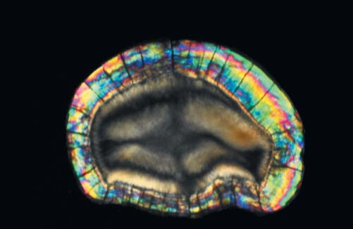
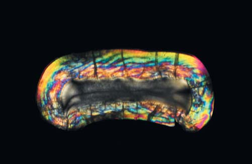
Фото 11. Шліф ікла товщиною 0,45 мм у поляризованому світлі при схрещених поляризаторах. Фото 12. Шліф центрального різця верхньої щелепи товщиною 0,40 мм. Хрести у проекції бічних мамелонів.
Обговорення
Уперше висновок про спрямоване поширення світла в дентині уздовж дентинних трубочок було зроблено на основі виявленого ефекту «збільшення – зменшення» зображення при накладанні поперечного шліфа моляра на тест-об'єкт.1 Для дослідження автори використовували видалені треті моляри, з яких готувалися шліфи (оригінальна назва – «диски»), площина яких була перпендикулярна поздовжній осі зуба і містила дентин, розташований між жувальною поверхнею і дахом порожнини зуба. Товщина дисків становила від 1,0 до 2,0 мм. Диски накладалися на тест-об'єкт, схожий на штрихову миру, і фотографувалися у прохідному природному світлі при його падінні з боку тест-об'єкта. При контакті диска з тест-об'єктом поверхнею, повернутою до порожнини зуба (рис. 1, 2), і фотографуванні з боку жувальної поверхні виходило збільшене зображення тест-об'єкта. Перевертання диска давало зменшене зображення того ж тест-об'єкта. Оцінювалася ділянка дентину, що відповідала центральній ямці. Після декальцинації дисків у 5% мурашиній кислоті ці ефекти зберігалися, але чіткість зображення погіршувалася. Було зроблено висновок про те, що дентин зуба є аналогом волоконно-оптичного фокона. Автори зазначили, що ефект збільшення зображення тест-об'єкта пов'язаний з розходженням дентинних трубочок у напрямку від порожнини зуба до жувальної поверхні, а ефект зменшення зображення – відповідно, зі сходженням трубочок у зворотному напрямку. Зіставляючи кількість пересічених площиною шліфа трубочок на його поверхнях, вони зробили висновок про те, що кратність збільшення або зменшення зображення тест-об'єкта відповідає частці від ділення кількості трубочок, які перетнули поверхню, повернуту до порожнини зуба, на кількість трубочок, перетнутих поверхнею, повернутою до дентиноемалевого з'єднання. Так, у наведеному прикладі в полі зору на поверхні шліфа, повернутій до порожнини зуба, нараховано 1270 просвітів трубочок, а на протилежній поверхні в тому ж полі зору – 750. Частка від ділення 1270/750 становить 1,7 (n), і вона, на думку авторів, відповідає кратності збільшення або зменшення тест-об'єкта. Однак слід зауважити, що кратність зміни розміру тест-об'єкта визначається по одній координаті, а кількість просвітів трубочок рахується на площі. Таким чином, виходячи із законів геометрії, кратність збільшення або зменшення тест-об'єкта має відповідати квадратному кореню з n.
Зі згаданої вище роботи1 випливають два важливих висновки:
1) ступінь зміни величини зображення тест-об'єкта залежить від максимального кута розходження або сходження дентинних трубочок;
2) цей кут визначає зміну щільності дентинних трубочок по їх ходу від порожнини зуба до дентиноемалевого з'єднання і, відповідно, від дентиноемалевого з'єднання до порожнини зуба.
Аналізуючи подані результати (фото 1, 2, 5), можна сказати, що кут розходження дентинних трубочок у напрямку «ріг порожнини зуба – вершина горба» у молярів і премолярів менший, ніж в інших напрямках від даху порожнини зуба до дентиноемалевого з'єднання жувальній поверхні. З цього випливає, що щільність трубочок у цьому ж напрямку зменшується меншою мірою у порівнянні з іншими напрямками. У той же час з гістології зубів відомо, що кількість дентинних трубочок зменшується на одиницю об'єму дентину не лише у напрямку від порожнини зуба до дентиноемалевого або дентиноцементного з'єднання, але й від рогу пульпи до апексу кореня. Поєднання цих двох факторів (велика щільність трубочок у зоні рогів пульпи і мале розходження у напрямку горбів) пояснює факт найбільшої щільності дентинних трубочок під емаллю в зоні вершин горбів дентину і негомотетичності «світлого центру» зуба.2
Відносно висока щільність трубочок у поєднанні з їх відносно малим сходженням у напрямку до порожнини зуба, ймовірно, є причиною утворення фігур у вигляді хрестів, які спостерігаються у прохідному поляризованому светлі.3 Такі оптичні ефекти відомі в кристалооптиці і називаються коноскопічними фігурами. Коноскопічні фігури є результатом інтерференції світлових променів, що сходяться, які набувають різниці ходу після проходження через систему «поляризатор – кристалічна пластинка – аналізатор». При цьому площина пластинки має бути перпендикулярна оптичній осі одновісного кристала, з якого вона виготовлена.4 При схрещених поляризаторах коноскопічна фігура набуває вигляду хреста на тлі інтерференційних кривих у вигляді концентричних кілець. При паралельних поляризаторах уся картина просвітляється і чорний хрест стає білим. Щось подібне можна побачити, порівнюючи фото 3 і фото 4. Така зовнішня схожість дозволила висунути припущення, що коноскопічні фігури дентину формуються за рахунок переважного проходження світла через перитубулярний дентин,3 де оптичні осі кристалів гідроксиапатиту орієнтовані уздовж дентинних трубочок.5
Однак слід зазначити, що коноскопічні фігури можна отримати не тільки на кристалах, які є анізотропними об'єктами, але й на ізотропному склі, або спечених скляних волокнах. На фото 13 бачимо коноскопічну фігуру, яка виявилася при проходженні світла через скляний стержень довжиною 70 мм з постійним діаметром 4,5 мм при схрещених поляризаторах. На фото 14 зображена коноскопічна фігура, яка спостерігалася на тому ж стержні при паралельних поляризаторах. Тут слід зазначити, що відрізаний від такого стержня диск (відшліфований і відполірований) товщиною 3 мм, поміщений між поляризаторами, коноскопічну фігуру у вигляді хреста не давав. На фото 15 – коноскопічна фігура, яка спостерігалася на світловоді полімеризаційної лампи «WOODPECKER LED.B» при схрещених поляризаторах, на фото 16 – при паралельних поляризаторах. В обох випадках (навколо стержня і світловода) світло екрановане світлонепроникним матеріалом.
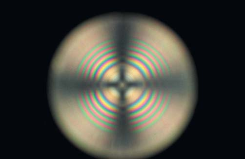
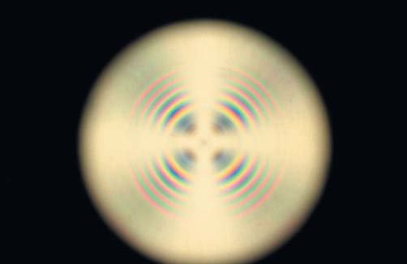
Фото 13. Коноскопічна фігура, утворена скляним стержнем при схрещених поляризаторах. Фото 14. Коноскопічна фігура, утворена тим самим скляним стержнем при паралельних поляризаторах.
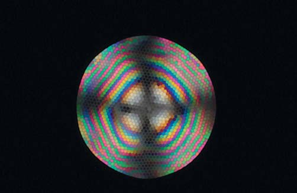
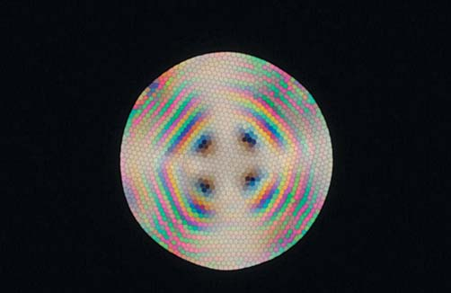
Фото 15. Коноскопічна фігура, утворена світловодом полімеризаційної лампи при схрещених поляризаторах. Фото 16. Коноскопічна фігура, утворена світловодом полімеризаційної лампи при паралельних поляризаторах.
Таким чином, різниця ходу, яка спричиняє виникнення коноскопічних фігур, не обов'язково пов'язана з двопроменезаломленням в одновісних кристалах типу гідроксиапатиту. Можна припустити, що коноскопічні фігури, подані на фото 13 і 14, формуються за рахунок багаторазового відбиття від стінок стержня під різними кутами, що на виході дає різницю ходу та інтерференційну картину. Щось подібне відбувається на виході світловода (фото 15, 16).
Гіпотеза про переважне поширення світла через перитубулярний дентин (ПТД) дуже популярна у фізиків, котрі виходять з того, що у ПТД показник заломлення значно перевершує такий у інтертубулярного дентину (ІТД). Слід сказати, що дані про показники заломлення ПТД та ІТД,6 на які спираються шановні колеги-фізики, отримані розрахунковим шляхом на основі правила адитивності. Однак дентин – це асоційована суміш органічних сполук, гідроксиапатиту і води,7 а в асоційованих сумішах правило адитивності може не працювати.8
Якщо виходити з того, що світло поширюється переважно перитубулярним дентином, в результаті чого за рахунок сходження трубочок формується коноскопічна фігура, то така фігура не повинна спостерігатися після перевертання шліфа. Однак на шліфах іклів коноскопічні фігури видно з обох боків. На фото 7 і 8 подано шліф ікла на тест-об'єкті при падінні світла з боку рвучого горба. При цьому світло має напрямок, який сходиться, на що вказують темна облямівка у дентиноемалевого з'єднання і зменшення зображення тест-об'єкта. Різний ступінь зменшення на мезіально-дистальному і вестибуло-оральному напрямках говорить про астигматичність цього дентинного фокона. Астигматичність фокона повинна бути зумовлена різними кутами розходження трубочок по ортогональних координатах, наслідком чого, ймовірно, є трансформація хреста в лемніскату при повороті шліфа відносно схрещених поляризаторів (фото 9, 10) або повороті одного з поляризаторів. На фото 18 і 19 той же шліф при падінні світла з боку порожнини зуба. Через світловий потік, що розходиться, немає темної облямівки. У вестибуло-оральному напрямку помітне дуже незначне збільшення тест-об'єкта, а в мезіально-дистальному – значне збільшення. Тобто ефекти повторюють те, що на фото 7 і 8, але з протилежним знаком. У поляризованому світлі при падінні світла з боку порожнини зуба коноскопічні фігури і їх форма зберігаються (фото 19, 20).
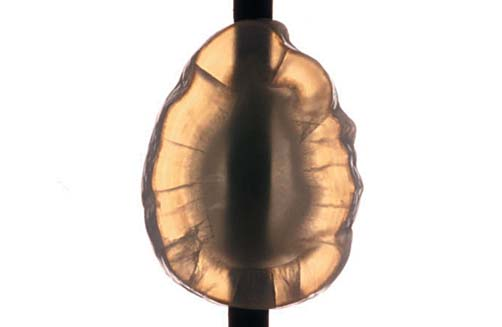
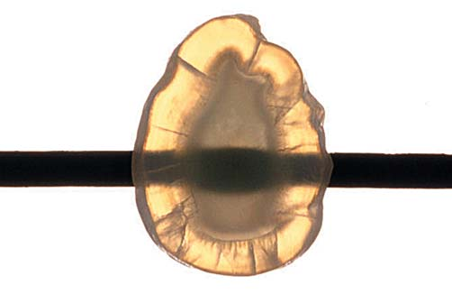
Фото 17. Ефект незначного збільшення зображення тест-об'єкта дентином шліфа верхнього ікла при падінні світла з боку порожнини зуба. Вестибулярна поверхня повернута ліворуч. Фото 18. Більш виражений ефект збільшення зображення тест-об'єкта дентином того ж шліфа при падінні світла з боку порожнини зуба при повороті тест-об'єкта на 90°.
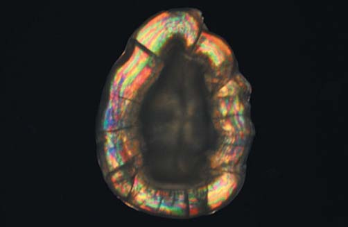
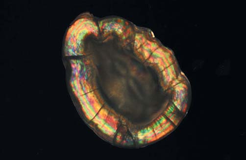
Фото 19. Коноскопічна фігура у вигляді хреста у схрещених поляризаторах при падінні світла з боку порожнини зуба. Фото 20. Коноскопічна фігура у вигляді лемніскати у схрещених поляризаторах при падінні світла з боку порожнини зуба і повороті шліфа.
При порівнянні пари зображень на фото 9 і 10 з аналогічною парою на фото 19 і 20 видно, що в останньому випадку відносна товщина емалі більша, а відносна площа дентину менша, оскільки сфотографована поверхня повернута до рвучого горба. Через цю ж причину відносна величина коноскопічних фігур більша через розходження дентинних трубочок в напрямку рвучого горба.
Таким чином, після перевертання шліфа коноскопічні фігури формуються світловим потоком, що сходиться, а не розходиться. Це суперечить викладеним раніше теоретичним постулатам3 про формування коноскопічних фігур дентину за рахунок поширення світла перитубулярним дентином уздовж оптичних осей кристалів гідроксиапатиту, що сходяться. Виходячи з можливості формування коноскопічних фігур у скляному стержні і регулярному світловоді (фото 13-16), можна сказати, що у дентині ці фігури формуються за рахунок його хвилевідних властивостей в особливих локальних зонах з малим розходженням дентинних трубочок.
Висновки
Розглянуті вище оптичні особливості зон дентину, де спостерігаються або можуть спостерігатися коноскопічні фігури, свідчать про найбільший рівень упорядкованості і щільності дентинних трубочок у напрямку від порожнини зуба до вершин горбів або ріжучого краю. Це є чинником підвищеної питомої електропровідності відповідних локальних ділянок дентину. Можна сказати, що чим менший кут розходження (сходження) дентинних трубочок, тим ліпша видність коноскопічних фігур і тим більша електропровідність. Винятком є різці, у яких для утворення коноскопічних фігур не вистачає простору у вестибуло-оральному напрямку. У молярів зі слабко вираженим фісурно-горбиковим рельєфом коноскопічні фігури на горизонтальних шліфах можуть зовсім не проявлятися, і у них немає достовірних відмінностей електропровідності локальних зон.
Література
- Walton R.E., Outhwaite W.C., Pashley D.F. Magnification – an interesting optical property of dentin // J. Dent. Res. – 1976. – Vol. 55, № 4. – P. 639–642.
- Радлинский С., Грисимов В. Топография слоев композита в реставрационной конструкции бокового зуба // ДентАрт. – 2007. – №2. – С. 42–48.
- Золотарев В.М., Грисимов В.Н. Архитектоника и оптические свойства дентина и эмали зуба // Оптика и спектроскопия. – 2001. – Т. 90, №5. – С. 836–843.
- Шубников А.В. Интерференция света в кристаллических пластинках. В кн.: Основы оптической кристаллографии. – М.: Изд-во АН СССР, 1958. – С. 63–117.
- Frank R.M. Etude au microscope electronique de l'odontoblaste et du canalicule dentinare human // Arch. Oral Biol. – 1966. – Vol. 11, № 2. – P. 179–199.
- Zijp J.R., ten Bosch J.J. Theoretical model for the scattering of light by dentin and comparison with measurements // Appl. Opt. – 1993. – Vol.32, №4. – P. 411–415.
- Boonstra W.D. Protein–apatite interactions in dentine: Ph. D. Dissertation / State university of Groningen. – Groningen (The Netherlands), 1991. – 101 p.
- Иоффе Б.В. Рефрактометрические методы химии. – Л.: Химия, Ленингр. отделение. – 1983. – 352 с.: ил.